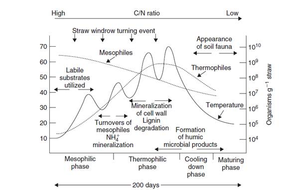

AMBE 101 :: Lecture 20 :: COMPOSTING

Composting is the active process of converting organic material to more stabilized forms of C through the action of microorganisms. Specifically, composting is the biological decomposition of wastes consisting of organic substances of plant or animal origin under controlled conditions to a state sufficiently stable for storage and utilization (Diaz et al., 1993). Compost as a product can be used in gardens, in nurseries, and on agricultural land. With respect to management of organisms, composting is perhaps the prime example since we manage the microbial process and the microbial product and manage the use of compost in microbially based systems (Cooperband, 2002). As the compost definition implies, practically any plant or animal material can be composted. Compost plays a major role in the agriculture of developing countries using organic agriculture and biodynamic farming, being relied upon to provide organic matter and nutrients and increase soil tilth. It also plays a role in processing the human waste stream. The United States alone produces nearly 10 MMT of sewage sludge and 185 MMT of garbage annually, on a dry weight basis. Less than 15% of municipal solid waste is recycled; however, more than 30% of the sewage sludge is beneficially used as composted products (Rynk, 1992; http://compost.css.cornell.edu/OnFarmHandbook).
Traditionally yard waste is thought of as “the” compost material; however, manure, meat and dairy waste, wood, sawdust, and crop residue can be composted. In addition, animal carcass composting is receiving significant attention due to the environmental benefits versus burial, which can contribute to groundwater contamination.
One important aspect of the material that affects the compost process and product is the C:N ratio of the starting material, ideally it should be 25 to 30:1. Typical C:N ratios of different materials are shown in Table below:
C:N Ratios of Various Compost Materials
Materials |
C:N |
Activated sludge |
6 |
Grass clippings |
12–15 |
Manure |
20–50 |
Poultry manure |
15 |
Soil humus |
10 |
Sawdust |
200–500 |
Vegetable waste |
12 |
Wheat straw |
80 |
Wood |
400 |

The organisms and processes occurring during composting of straw. The length of time varies with outside temperature and extent of mixing but usually involves 200 days (from W. R. Horwath, personal communication).
Materials can be mixed to adjust the C:N ratio for a consistent product. There are numerous methods used for preparing materials and the environment for the composting process, including using waste materials alone, mixing organic materials of different quality, adding external nutrients and/or inocula, and controlling the physical environment to promote aerobic or anaerobic decomposition. In compost terminology, process strategy refers to the management of the biological and chemical activity of the composting process. The biological processing uses terminology referring to the stage of the composting, such as active stage (mesophilic), high-rate stage (thermophilic), controlled (cooling), and curing stage (maturing) (Fig. 17.2). Configuration refers to the physical management of the process such as using piles, stacks, or windrows. Composting configurations range from windrow or open systems to enclosed systems, with windrow further classified as either static or turned. An example of a static system would be a stationary undisturbed mound of organic material with air being forced up through the mound or pulled down through the mound. In contrast, a turned system uses mixing as the aeration method, which also enhances the uniformity of decomposition and reduction in material particle size. The turned system is considered the traditional composting method for organic material (see Diaz et al., 1993, for more detail). With any composting system managing the composting process will consistently produce compost with the desired characteristics.
The most prevalent composting technique is aerobic decomposition, carried out by a diverse microbial population that changes composition as conditions change. This method is preferred since it proceeds more rapidly and provides a greater reduction in pathogens and weed seeds because higher temperatures are achieved. Physiochemical factors affecting aerobic composting are temperature, moisture, aeration, pH, additives, particle size, and the C:N ratio of the composted substrate. Mostly indigenous organism populations are used for the composting process; microbial inoculants are utilized only under certain conditions. Figure 17.2 depicts the process of composting straw for 200 days under optimum conditions of temperature and moisture. In the mesophilic stage metabolism of the labile-C-rich substrates increases rapidly, generating heat. At this point there is a mixture of bacteria, actinomycetes, and fungi contributing to the decomposition process. In the early and transition stage to thermophilic conditions the windrow is turned, causing a decline in temperature and oxygenation of the inner material, resulting in rapid decomposition and temperature increase. As the temperature reaches 40°C the system turns from a mesophilic to a thermophilic stage, favoring mainly thermophilic bacteria and actinomycetes, with Bacillus being the dominant genus. Common Bacillus species found at this stage, and accounting for 10% of the decomposition, are brevis, circulans, coagulans, licheniformis, and subtilis. Decomposition will continue in the thermophilic zone until substrates begin to decline, then a gradual decrease in temperature will occur.
As the temperature declines the mesophilic organisms reappear, especially fungi that have preference for the remaining lignin and cellulose substrates. Fungi, responsible for 30 to 40% of the decomposition the compost material, include Absidia, Mucor, and Allescheria spp., haetomium, thermophilum, dactylomyces. The actinomycetes, such as the Norcardia spp., Streptomyces thermofuscus, and S. thermoviolaceus are important in this phase when humic materials are formed from decomposition and condensation reactions. The actinomycetes are estimated to account for 15 to 30% of the decomposition of composted material.
The compost produced from this process is lower in C than the initial material, has a lower C:N and a higher pH, and can contain considerable NO3. The end product of composting depends on the original substrate, any added nutrients, degree of maturity, and composting method; typical properties of composted plant material are listed in Table 17.4. Adding compost to soil increases the SOM, which increases soil structure and water-holding capacity and infiltration. In addition, compost contains significant amounts of plant nutrients such as N, P, K, and S and micronutrients, which are slowly released into the soil. As an ancillary benefit compost contains fairly resistant C compounds and may be dominated by fungi. Using compost on a garden or agricultural soil would favor an increase in the population of fungi and thus an increase in the fungi:bacteria ratio. Fungi are very abundant in soils and can constitute as much biomass as roots and as a group they are also the major organic matter decomposers in soil. Increasing the soil fungal population can increase C compounds that are agents in binding soil particles into aggregates, which increase soil tilth. Recent studies (Bailey et al., 2002) haveshown there is increased soil C storage in soils with greater fungal:bacterial ratios. Thus, as a consequence of using compost on our soil we have managed the soil microorganism population to our benefit.
General Compost Properties
% N |
>2 |
C : N |
<20 |
% Ash |
10–20 |
% Moisture |
10–20 |
% P20 |
15–1.5 |
Colour |
Brown black |
Odour |
Earthy |
% Water-holding capacity |
150–200 |
CEC (meq 100 g–1) |
75–100 |
% Reducing sugars |
<35 |
CROP ROTATIONS AND GREEN MANURES
Crop rotations have been practiced over the long history of agriculture. Studies dating from the 1840s on have shown that N supplied to grain crops was the major reason for using crop rotations containing legumes (Triplett and Mannering, 1978). With the advent of inexpensive nitrogen fertilizers, crop rotations containing legumes declined. Only recently has the value of crop rotations specifically including legumes been recognized as critical in maintaining SOM and soil productivity. Researchers in Canada studied the nutrient dynamics in a Canadian Luvisol after 50 years of cropping to a 2-year rotation (wheat–fallow) or a 5-year rotation (wheat–oats–barley–forage–forage) (McGill et al., 1986). Their results showed that the soil cropped to the 5-year rotation contained greater amounts of organic C and N. In addition they found that microbial turnover (i.e., carbon mineralization) was twice as fast in the 2-year rotation. The 5-year rotation doubled the input of carbon into the soil over the 2-year system and had a greater percentage of organic C and N in biological form. These results suggest that longer cropping system rotations that include forage or legumes will conserve SOM, maintain a greater biological nutrient pool, and put more nutrients into the soil than intensive rotations.
In a 10-year study, a low-input diverse crop system with manure and a low-input cash grain system with legumes showed significant increases in SOM compared to a conventional corn/soybean rotation (Wander et al., 1994). In addition, in both low-input (multiple crop rotations) systems the microbial biomass was greater and its activity higher than the conventional rotation of corn/soybeans with chemical inputs. The low-input systems also mineralized significantly more N and the microbial biomass contained 33 kg N ha_1 more N than the conventional system.
n agricultural systems, plant pathogens are an important part of the soil microbial community. As growers reduce tillage and incorporate a greater variety of crops in rotation they face an increasing number of plant diseases that can cause significant stand and yield reductions. These potential losses, however, may be offset in systems incorporating green manures by promoting disease-suppressing properties that reduce plant pathogens, either (1) by increasing the levels of SOM that create conditions supporting a greater microbial biomass, competition for resources, antibiosis, or antagonism or (2) through direct inhibition by production of antibacterial/fungal compounds as in the case of Brassica cover crops that produce isothiocyanates. Cover crops are known to control disease-causing organisms through competition for resources and space, control of soil micronutrient status, and alteration of root growth.
| Download this lecture as PDF here |